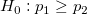
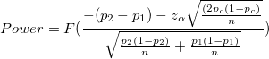
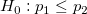
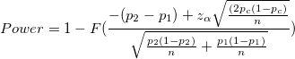
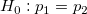
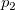
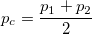
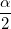

/math-17c9dc226287e3e0a79c7845584bac9b.png "Power =1-F(\frac{-(p_2-p_1)+z_{\frac{\alpha}{2} }\sqrt{\frac{(2p_c(1-p_c)}{n} }}{\sqrt{\frac{p_2(1-p_2)}{n}+\frac{p_1(1-p_1)}{n}}})+F(\frac{-(p_2-p_1)-z_{\frac{\alpha}{2}}\sqrt{\frac{(2p_c(1-p_c)}{n} }}{\sqrt{\frac{p_2(1-p_2)}{n}+\frac{p_1(1-p_1)}{n}}})")
片側検出力:


片側検出力:


両側検出力:

/math-7b8b965ad4bca0e41ab51de7b31363a1.png "n") : 各グループのサンプルサイズ
: 各グループのサンプルサイズ
/math-03b632315ee5bee654b60a6bd902a249.png "p_1") : 第1母集団の比率
: 第1母集団の比率

: 第2母集団の比率
/math-3abc4a58be38c24030120ec6c3464783.png "z_{\alpha }") : 正規分布の 水準の上側臨界値
: 正規分布の 水準の上側臨界値
/math-1cf3a44a9e37199f38d0e49c787182c9.png "z_{\frac{\alpha}{2} }") : 正規分布の
: 正規分布の

水準の両側臨界値: 標準正規分布の累積分布関数
Origin は、検出力の式を使用した反復アルゴリズムを使用します。各反復で試行標本サイズに対する検出力を評価し、整数の標本サイズに対応する検出力のうち、目標値より大きく、かつ目標値に最も近い値に達した時点で反復を終了します。